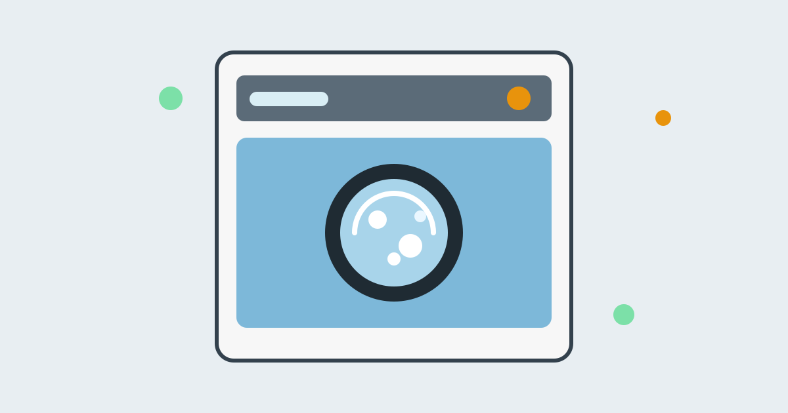

How Does a Washing Machine Clean Your Clothes?

Load dirty clothes, add detergent, press start, and an hour later the clothes come out clean and damp. The machine is doing three jobs at once, and needs all three: water alone would not shift grease, detergent sitting still would not lift dirt from fibres, and motion alone would only rub dirt around. Cleaning happens when the three work together in a timed cycle: wash, rinse, and spin.
At its heart, a washing machine is a drum that turns inside a tub of soapy water. The drum lifts the clothes up and lets them fall, over and over, while the detergent breaks the hold that dirt and grease have on the fabric. Then clean water rinses the loosened dirt away, and a fast spin squeezes most of the water out. Every part of the cycle has a reason, and understanding the reasons explains most of the everyday advice about washing: why not to overload, why temperature matters, and why more detergent is not always better.
The Three Ingredients: Water, Detergent, and Motion
Water is the carrier. It soaks into the fabric, swells the fibres slightly, and gives dirt somewhere to go once it is loosened. Without enough water, dirt that comes off one garment simply settles on another. That is one reason machines fill to a level matched to the load, and why a wash with too little water can leave clothes looking grey.
Detergent is the chemist. Its active ingredients, surfactants, have two ends: one attracted to water, one to grease and oil. In the wash they surround grease droplets and dirt particles, water-loving ends outward, lifting grease off the fabric and holding it suspended so it rinses away instead of settling back. Detergent also lowers water's surface tension, helping it soak into fabric. Many detergents add enzymes that break down food and sweat stains, and builders that soften water so surfactants work properly.
Motion is the muscle. In a front-loading machine, the drum rotates slowly and lifters inside it carry the clothes to the top, where they tumble down into the water. In a top-loading machine with an agitator, a central post twists back and forth, moving the clothes through the water. Either way, the repeated lifting, dropping, and rubbing flexes the fabric, pushes soapy water through it, and knocks loosened dirt free. The motion has to be vigorous enough to clean but gentle enough not to damage the fabric, which is why machines offer different cycles for delicates, cottons, and heavy items.
The Cycle, Step by Step
A typical wash runs in stages. First comes the fill: the machine lets in water and mixes in the detergent, then begins turning the drum. During the main wash, which may last twenty to forty minutes, the tumbling and the chemistry do the cleaning together. The water gradually becomes dirty as it collects the soil from the load, which is why the machine drains it away rather than reusing it.
Next comes the rinse: clean water tumbles through the clothes, diluting and carrying away remaining detergent and dirt. Most machines rinse more than once, as each rinse leaves less residue. Finally comes the spin: the drum rotates very fast, centrifugal force presses clothes to the drum wall, and water is driven out through the drum holes. The spin does not fully dry clothes, but it removes most water, which makes a real difference to drying time.
Why the Spin Works So Well
Spinning is the most forceful part of the cycle. At full speed the drum may rotate over a thousand times per minute, and the force on the clothes is many times their weight. Water is flung through the drum holes and pumped away, while fabric stays pressed to the drum. That is also why an unbalanced load makes the machine shake: a heavy lump on one side throws the drum off balance. Spreading the load evenly keeps the spin smooth.
Why Temperature Matters
Hot water loosens grease and makes detergents and enzymes work faster, which is why soiled whites and towels are often washed warm or hot. But hot water can set some stains, such as blood and egg, shrink wool and cotton, fade colours, and damage delicates. Cold water with a modern detergent cleans everyday lightly soiled clothes well and uses less energy. The care label is the best guide: it gives the highest safe temperature for the fabric.
It is worth knowing that most of a washing machine's energy goes into heating the water, not into turning the drum. Washing cold, and washing full loads, are the two simplest ways to reduce the energy a wash uses. The machine itself uses relatively little electricity for the motor and the pump.
Why Overloading Cleans Worse
An overloaded drum cannot tumble properly. Clothes pack into a tight mass that turns as a lump instead of falling through the water, so soapy water cannot reach every part and dirt cannot escape, and the rinse is less effective. The result is musty clothes, detergent residue, or patches still dirty. The test is simple: with clothes loaded, you should fit a hand's width of space at the top. If you must force the door shut, the load is too big.
Underloading has the opposite problem, though a smaller one. A tiny load in a large machine wastes water and energy, and a single heavy item can unbalance the spin. Two medium loads clean better, and cost less per garment, than one crammed load and one tiny one.
Common Misconceptions
One common misconception is that more detergent means cleaner clothes. It does not. Excess detergent produces extra suds that cushion the tumbling action and are hard to rinse out, leaving residue that traps dirt and dulls fabric. The dosing cap or the detergent packaging gives the right amount for a normal load in average water hardness, and using more than that rarely helps. Another is that the machine washes with the water you see. In a front-loader, the water level looks low because the clothes absorb most of it and the drum only partly fills; the clothes are washed as they tumble through the pool at the bottom, not by being submerged in a full tub.
A third is that a washing machine cleans itself. It does not, at least not fully. Detergent residue, lint, and moisture build up in the door seal, the detergent drawer, and the drum, and can grow mould and cause smells. An occasional hot empty wash, wiping the seal dry, and leaving the door slightly open after use keep the machine itself clean, which in turn keeps the clothes clean.
Frequently Asked Questions
Why do clothes sometimes come out still dirty?
Usually one of four causes: the load was too big to tumble, too little detergent was used for the soil level, the wrong temperature was chosen for the stain, or the stain needed pre-treatment before washing. Checking those four, in that order, solves most cases.
Why does the machine add water again after the wash?
That is the rinse. The dirty wash water is drained away first, and the fresh water dilutes and removes the detergent and loosened dirt that remain in the fabric. Without rinsing, clothes would come out stiff with detergent residue.
Can I wash everything on cold?
Most everyday clothes, yes, with a detergent made for cold washing. Heavily soiled items, towels, bedding, and whites benefit from warmer water. Always follow the care label, which gives the safe maximum temperature for that garment.
Why does the machine shake during the spin?
Usually an unbalanced load: wet clothes have clumped on one side of the drum. Pausing the machine, redistributing the clothes evenly, and restarting the spin normally fixes it. Repeated violent shaking with a balanced load can mean the machine itself is not level on the floor.
Conclusion
A washing machine cleans by combining three ordinary things in a timed sequence: water to carry dirt away, detergent to break dirt's grip on fabric, and motion to work the soapy water through every fibre. The rinse removes what was loosened, and the spin removes most of the water, leaving clothes clean and ready to dry.
That is why the everyday rules make sense. Do not overload the drum, use the right amount of detergent, choose the temperature the care label allows, and let the machine rinse and spin properly. The machine does the work, but it does its best work when the load gives it room to tumble.